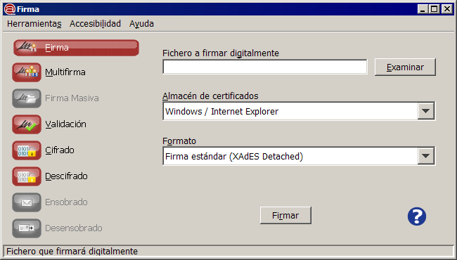

Catálogo de aplicaciones de < |
|---|
<
Esta obra está bajo una licencia Creative Commons Reconocimiento-NoComercial-CompartirIgual 3.0 Unported.
Índice
1.1.1 Applet Cliente @firma [3](#applet-cliente-firma)
1.1.2 MiniApplet Cliente @firma [4](#miniapplet-cliente-firma)
1.1.3 Cliente @firma StandAlone [5](#cliente-firma-standalone)
1.1.4 “Firma Fácil con @firma” [6](#firma-fácil-con-firma)
1.2.2 Compatibilidad con sistemas operativos [7](#compatibilidad-con-sistemas-operativos)
1.2.6 Formatos de firma electrónica soportados [9](#formatos-de-firma-electrónica-soportados)
La aplicación Cliente @firma adecuada a sus necesidades
Las distintas aplicaciones del proyecto Cliente @firma
El proyecto @firma cuenta con un conjunto de cuatro aplicaciones independientes diseñadas para cubrir cualquier necesidad en cuanto a firmas electrónicas. Es posible desplegar o utilizar una o varias de estas aplicaciones, y cada una de ellas cubre un segmento de funcionalidades y modos de operación diferentes.
Applet Cliente @firma
El Applet Cliente @firma es la aplicación dentro del proyecto más extendida actualmente entre las administraciones públicas, y proporciona un amplísimo rango de operaciones criptográficas y de firma electrónica para ser operadas vía Web con la máxima compatibilidad con distintos entornos operativos.
El Applet proporciona (entre otras) las siguientes funcionalidades:
-
Firmas electrónicas
- Consulte los formatos de firma soportados en el apartado Formatos de firma electrónica soportados.
-
Firmas electrónicas masivas
-
Basada en directorios
-
Programática (hay que proveer la lógica que indica los ficheros a firmar externamente)
-
-
Cifrados simétricos
-
Sobres digitales
-
Filtros de certificados configurables
-
Métodos de utilidad para funcionalidades avanzadas
MiniApplet Cliente @firma
El MiniApplet Cliente @firma no es una versión reducida del Applet Cliente @firma, sino una nueva implementación de las funcionalidades más solicitadas en cuenta a firma electrónica implementadas en un Applet de Java pequeño, eficiente y extremadamente ágil.
Si sus necesidades en cuanto a firma se ven cubiertas por las soportadas por el MiniApplet, este será siempre la opción preferente, ya que proporciona una mejor experiencia de usuario (menos tiempo de carga) y una mayor facilidad de integración (operación simplificada).
El Applet proporciona (entre otras) las siguientes funcionalidades:
-
Firmas electrónicas
- Consulte los formatos de firma soportados en el apartado Formatos de firma electrónica soportados.
-
Filtros de certificados pre-configurados
Cliente @firma StandAlone
<
Ilustración 5: Interfaz del Cliente @firma StandAlone
El Cliente @firma StandAlone no es una aplicación Web, sino una aplicación Java de escritorio compatible con cualquier sistema operativo y capaz de realizar prácticamente cualquier operación criptográfica y tipo de firma electrónica.
Una notable característica de esta aplicación es su alto grado de accesibilidad, que la convierte en la opción preferente para garantizar su adecuado uso por parte de personas con algún tipo de discapacidad.
La aplicación “StandAlone” proporciona (entre otras) las siguientes funcionalidades:
-
Firmas electrónicas
- Consulte los formatos de firma soportados en el apartado Formatos de firma electrónica soportados.
-
Firmas electrónicas masivas basadas en directorios
-
Validación y extracción de datos de firma
-
Cifrados simétricos
-
Sobres digitales
-
Interfaz gráfico accesible
“Firma Fácil con @firma”
<
Ilustración 6: Interfaz gráfico de "Firma Fácil con @firma"
Cuando necesitamos una aplicación de escritorio, pero deseamos únicamente realizar firmas electrónicas avanzadas (AdES) y es conveniente una operación fácil y sencilla, la aplicación “Firma Fácil con @firma” pasa a ser la opción más adecuada.
“Firma Fácil con @firma” restringe la funcionalidad a firmas electrónicas AdES, pero proporciona un interfaz gráfico visualmente atractivo, intuitivo y fácil de usar y perfectamente adaptado a los sistemas operativos modernos.
La aplicación “Firma Fácil” proporciona (entre otras) las siguientes funcionalidades:
-
Firmas electrónicas
- Consulte los formatos de firma soportados en el apartado Formatos de firma electrónica soportados.
-
Interfaz gráfico avanzado
Tablas de características de las aplicaciones del proyecto Cliente @firma
Compatibilidad con modos de despliegue/operación
| Web Applet | Escritorio PC/Mac | |
|---|---|---|
| Applet | | |
| MiniApplet | | |
| StandAlone | | |
| FirmaFácil | * | |
* La aplicación “Firma Fácil con @firma” puede ser desplegada en forma de Applet de Java, pero no proporciona automatización ni integración con JavaScript, manteniendo la operación con su propio interfaz gráfico, solo que empotrado en una página Web.
Ninguna de las aplicaciones actuales es compatible con despliegue sobre sistemas operativos móviles, como Apple iOS, Google Android, RIM BlackBerry o Microsoft Windows Phone.
Compatibilidad con sistemas operativos
| Microsoft Windows | Linux | Apple Mac OS X | |
|---|---|---|---|
| Applet | | | |
| MiniApplet | | | |
| StandAlone | | | |
| FirmaFácil | | | |
Puede consultar en los manuales de integración de las aplicaciones “Applet” y “MiniApplet”, el manual de uso de la interfaz StandAlone y el fichero Readme de Firma Fácil para identificar las distintas versiones de sistemas operativos compatibles.
Ninguna de las aplicaciones actuales es compatible con sistemas operativos móviles, como Apple iOS, Google Android, RIM BlackBerry o Microsoft Windows Phone.
Compatibilidad con navegadores Web (modo Applet)
| Internet Explorer | Mozilla Firefox | Google Chrome | Apple Safari | Opera | |
|---|---|---|---|---|---|
| Applet | | | | | |
| MiniApplet | | | | | |
| StandAlone | N/A | N/A | N/A | N/A | N/A |
| FirmaFácil | * | * | * | * | * |
* La aplicación “Firma Fácil con @firma” aunque compatible con despliegue Web en modo Applet, no permite automatización ni integración mediante JavaScript. No se proporciona soporte sobre el despliegue como Applet de “Firma Fácil con @firma”.
Puede consultar en los manuales de integración de las aplicaciones “Applet” y “MiniApplet” las distintas versiones de navegadores compatibles.
Compatibilidad con versiones del entorno de ejecución de Java (JRE)
| Java 5 | Java 6 | Java 7 | |
|---|---|---|---|
| Applet | | | |
| MiniApplet | | | |
| StandAlone | | | |
| FirmaFácil | | | |
La compatibilidad se refiere tanto a versiones de 32 como de 64 bits.
Tipos de operaciones criptográficas soportadas
| Firmas Electrónicas | Firmas Másivas | Sobres Digitales | Cifrados Simétricos | |
|---|---|---|---|---|
| Applet | | | | |
| MiniApplet | | | | |
| StandAlone | | | | |
| FirmaFácil | | * | | |
* Es posible simular medios de firma masiva con el MiniApplet usando programación JavaScript y filtros de certificados pre-programados.
Formatos de firma electrónica soportados
Salvo que se indique lo contrario las distintas herramientas soportan las variantes BES y EPES de los formatos de firma avanzados (AdES).
| XAdES | PAdES | CAdES | OOXML | ODF | CMS | XMLDSig | |
|---|---|---|---|---|---|---|---|
| Applet | | | | | | | |
| MiniApplet | | | | | | | |
| StandAlone | | | | | | | |
| FirmaFácil | * | * | * | | | | |
* La aplicación “Firma Fácil con @firma” únicamente soporta las siguientes variantes de cada formato:
-
PAdES: BES para fichero PDF (Portable Document Format).
-
CAdES: BES Con contenido (implícitas) para ficheros binarios.
-
XAdES: EPES Enveloped para facturas electrónicas y BES Enveloping para otros ficheros.
Accesibilidad para personas con discapacidades
| Accesible | |
|---|---|
| Applet | |
| MiniApplet | |
| StandAlone | |
| FirmaFácil | * |
* La aplicación “Firma Fácil con @firma” presenta un nivel alto de accesibilidad, aunque con ciertas carencias en las lecturas de textos en pantalla.